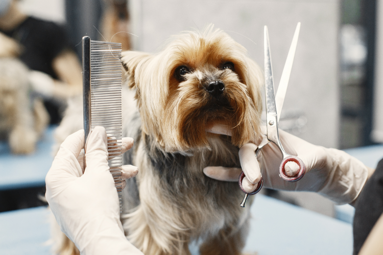
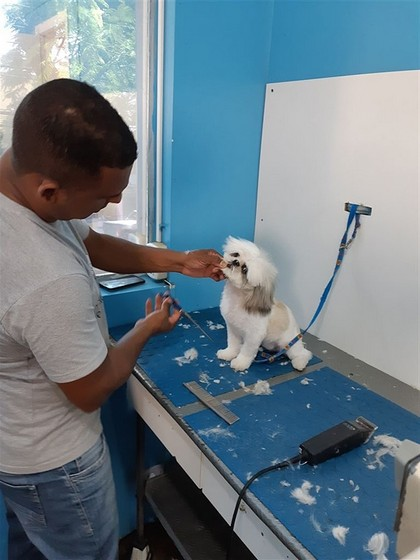
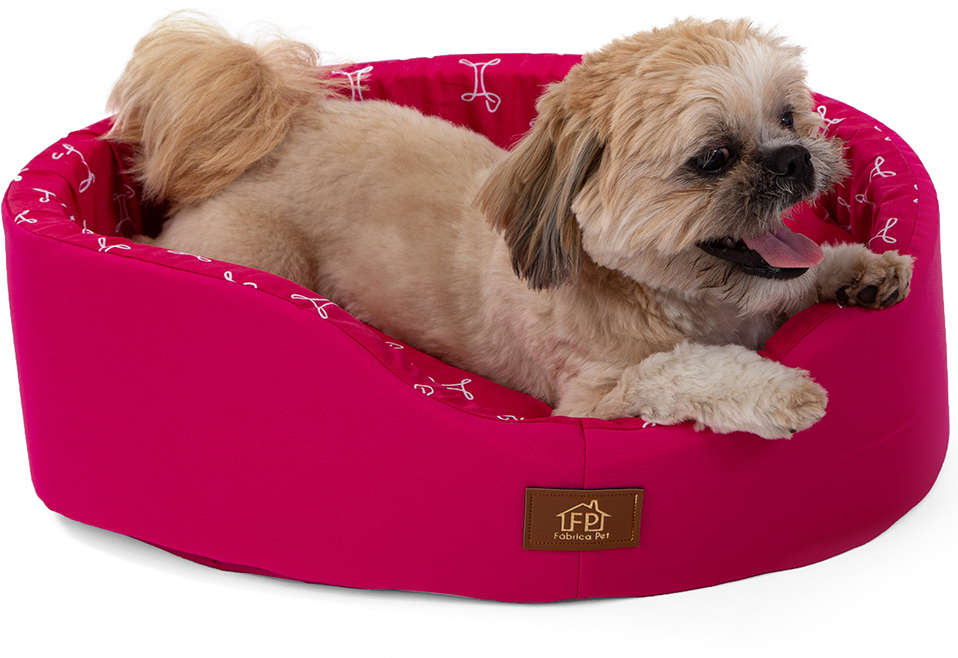
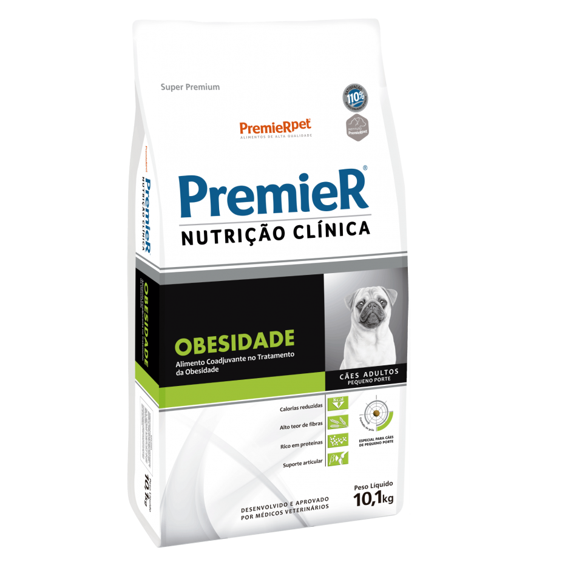
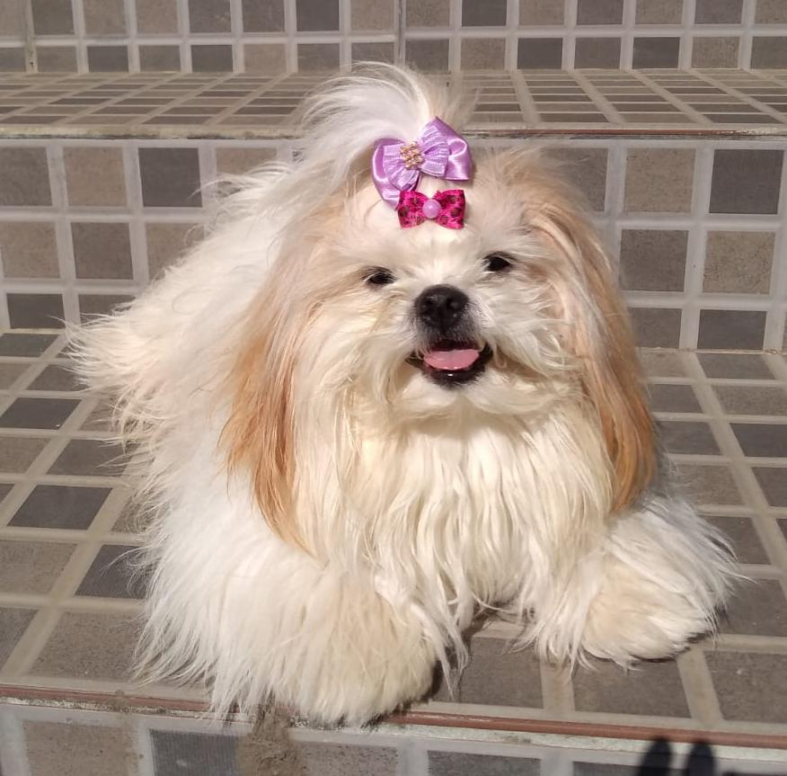
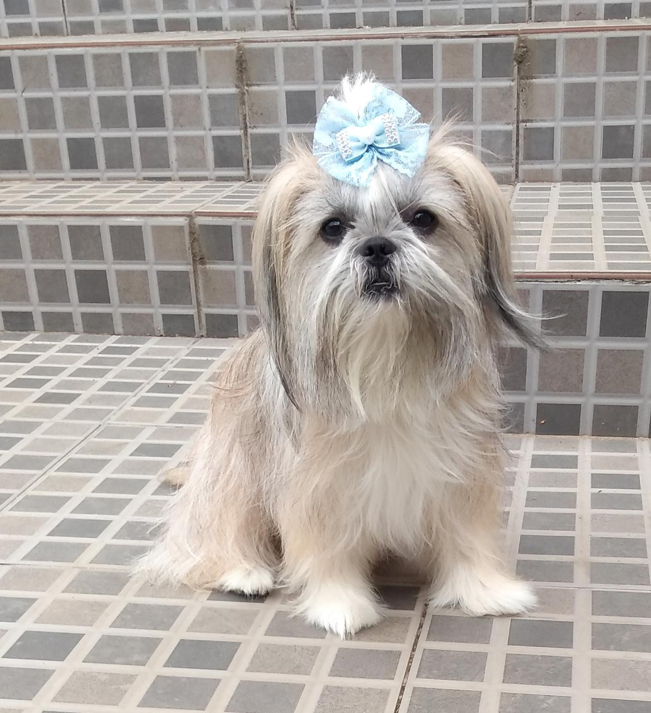
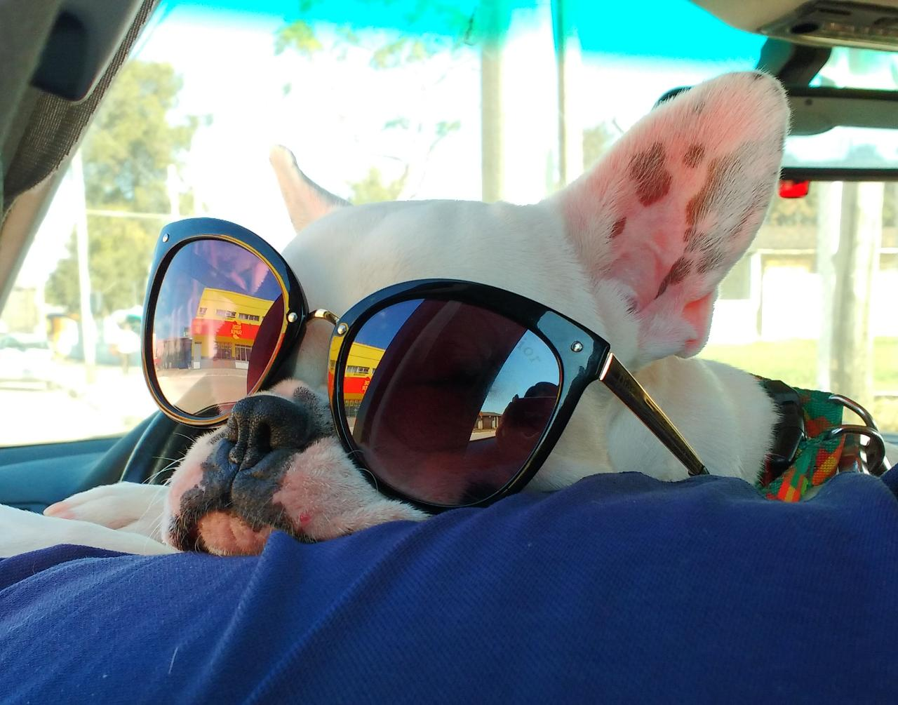

Somos a PetLoveRS, chegamos para melhor atender as necessidades do seu pet, com serviços de qualidade em
tosa,banho e medicina veterinária.
Também contamos com uma diversa linha de produtos pra trazer uma melhor qualidade de vida ao seu pet.
Estamos localizados em Bagé-RS Av. sete setembro 140, venha conferir nossa loja.
BOAS-VINDAS A PETLOVERS 👋
Tudo o que você precisa pra cuidar do seu pet.
Produtos e Serviços
Tosa
Seu pet de penteado novo.
Banho
Seu pet limpinho e cheiroso.
Camas
Seu pet com o conforto que ele merece.
Alimentos
Seu pet com uma alimentação de qualidade.
Relatos dos clientes

" Me sinto um novo ser, muito mais limpinho e cheiroso, depois que mamãe começou a comprar meu alimento nessa tia da pet eu não sinto mais fome !!"
- Charlotte

" Gostei muito da tia dessa pet, me tratou com muito carinho e me deu uns agradinhos durante o banho, fez minhas unhas, me deu um laço novo pra prender minha franja e colocou um perfume maravilhoso."
- Nina

" Me sinto um novo ser, muito mais limpinho e cheiroso, depois que mamãe começou a comprar meu alimento nessa tia da pet eu não sinto mais fome!"